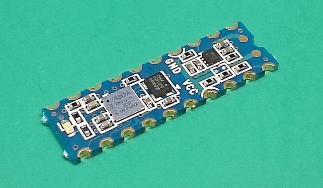
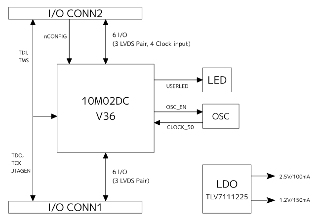
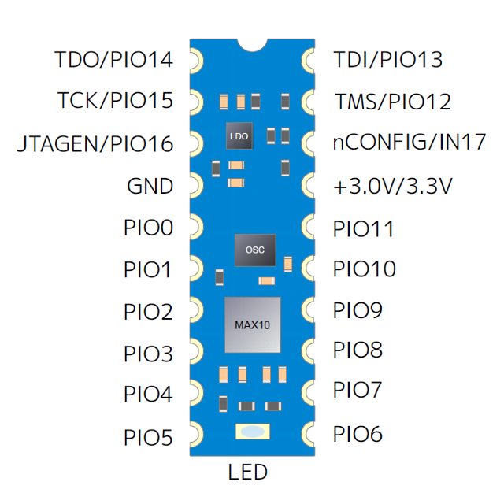
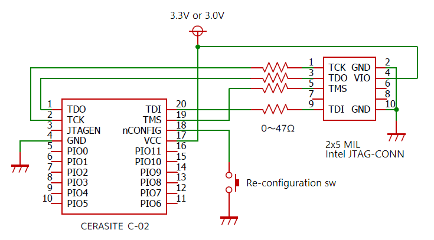

'CERASITE' - DIPスケールFPGAボード
Overview

CERASITE(セラサイト) C-02は300mil幅DIPサイズの超小型のFPGAボードです。
Intel MAX10 FPGA搭載し、電源回路、OSCをコンパクトに集積しています。外形寸法は300mil幅20ピンDIP ICと同等になっており、ユニバーサル基板やブレッドボードでのプロトタイピングに最適です。
- 300mil幅20ピンDIPサイズ(25.7 mm × 7.6 mm)
- Intel MAX10 10M02DCV36 (2kLEs, 108kbitメモリー, 96kbit flash, VBGA36)
- オンボードOSC (50.0 MHz)
- 最大17本のユーザーI/O数
- 3.0V/3.3V単電源駆動
- ユーザーLEDを1個搭載
- PCBに直接マウント可能な片面実装
- ユニバーサル基板で使いやすい端面スルーホール
C-02 ボードブロック図

ボードピン配置図

- TDO, TCK, TDI, TMSおよびJTAGENはユーザーI/Oと排他利用です。
- nCONFIGは入力専用ピンです。
- デバイスやI/O機能の詳細はIntel MAX10デバイスデータシートを参照してください。
代表的な結線

- 3, 18, 19, 20番ピンは内部で10kΩでプルアップされています。また2番ピンは内部で1kΩでプルダウンされています。
- nCONFIGピンをユーザーI/Oとして使う場合は入力ピンとしてのみ使用できます。
- JTAGピンをユーザーI/Oとして使う場合はJTAGENピンは機能切り替えピンとして動作し、ユーザーI/Oとしては使えません。ユーザーI/Oに切り替える場合はJTAGENピンは1kΩでプルダウンします。JTAG機能に切り替える場合はJTAGENピンをHレベルに固定します。
- ⚠️ QuartusPrime 21.1 において書き込み・ベリファイ・ブランクチェック不良の発生が確認されています。20.1以前のバージョンをご利用下さい。
ダウンロード
C-02 取り扱い説明書 (PDF)
![GoogleDrive-Mark]() c-02_manual_v1.1.pdf
c-02_manual_v1.1.pdf
C-02 回路図 (PDF)
![GitHub-Mark]() cerasite_c-02_shem.pdf
cerasite_c-02_shem.pdf
購入先
Twitter - ＠s_osafune
GitHub - osafune
©2014-2019 J-7SYSTEM WORKS LIMITED.